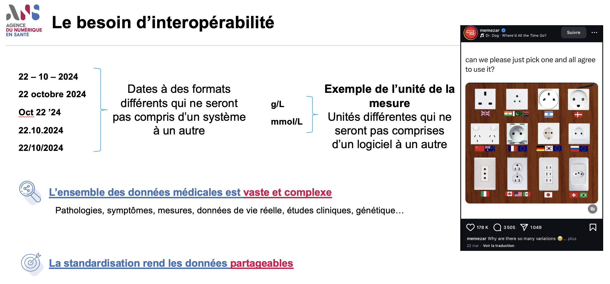

Documentation des guides d'implémentation de l'ANS
0.1.10 - trial-use

Documentation des guides d'implémentation de l'ANS
0.1.10 - trial-use

This page is part of the Documentation des guides d'implémentation de l'ANS (v0.1.10: Release) based on FHIR (HL7® FHIR® Standard) R4. This is the current published version. For a full list of available versions, see the Directory of published versions
L’interopérabilité désigne la capacité des logiciels de santé à partager et intégrer des données de santé.
Par exemple, les dates peuvent s’écrire dans différents formats : 22 décembre 2027, 22/12/2027, 22-12-2027, 12/22/2027 aux Etats-Unis, … Il devient ainsi évident qu’une mauvaise interprétation des données par les logiciels peut provoquer des erreurs dans la prise en charge des patients ou des biais conséquents lors d’études cliniques.
L’objectif de l’interopérabilité est de désigner un format commun et non ambigu pour les données partagées : les dates, les résultats de biologie, les pathologies, les symptômes, les données administratives, etc …

Capture d'écran du webinaire d'introduction à l'interopérabilité
Dans votre pratique quotidienne, cela signifie que les informations patient et données de santé peuvent être partagées et exploitées :
L’interopérabilité permet de garantir que ces données restent exploitables et compréhensibles par tous les acteurs du parcours de soins et de la recherche clinique, indépendamment des outils utilisés.
Il est important de noter que les couches de sécurisation et de gestion des consentements patient viennent en sus.
Les données de santé sont complexes et nécessitent une expertise métier forte pour les comprendre. Sans cette expertise, les spécifications techniques risquent de ne pas répondre aux besoins réels du terrain ou d’oublier des cas d’usage importants.
Idéalement, une spécification d’interopérabilité doit être construite de manière rapprochée entre un expert métier (professionnel de santé) et un expert interopérabilité. Les professionnels de santé apportent leur connaissance des pratiques, des cas particuliers et des contraintes métier, tandis que les experts techniques traduisent ces besoins en spécifications standardisées.
Pour faciliter cette collaboration entre professionnels de santé et experts techniques, des outils méthodologiques ont été développés. Les modèles logiques, présentés plus bas dans ce document, constituent justement le pont permettant aux PS d’exprimer leurs besoins métier dans un langage compréhensible avant leur traduction technique en standard FHIR.
FHIR (Fast Healthcare Interoperability Resources) est un standard international développé par l’organisation internationale Health Level 7 (HL7) pour faciliter l’échange de données de santé. Concrètement, FHIR définit des “ressources” standardisées (Patient, Consultation, Prescription, etc.) qui représentent les concepts métier que vous utilisez quotidiennement. Grâce à FHIR, les informations que vous produisez peuvent être comprises par n’importe quel système compatible, permettant ainsi une meilleure coordination des soins et réduisant les ressaisies manuelles d’informations.
Le standard FHIR est très générique pour former un socle commun à tous les cas d’usages et international : recherche, biologie, administratif, …
Un guide d’implémentation (IG) est un document technique qui précise comment utiliser le standard FHIR dans un contexte spécifique, par exemple pour un programme national de santé ou un cas d’usage particulier. Il définit les règles et contraintes adaptées aux besoins métier français : quelles données sont obligatoires, quels formats utiliser, quelles nomenclatures respecter (CIM-10, CCAM, etc.). Pour vous, professionnels de santé, cela signifie que votre logiciel respecte des règles communes avec les autres systèmes, garantissant ainsi la qualité et la cohérence des échanges.
Un modèle logique est une représentation structurée et simplifiée des données métier, indépendante de toute technologie. Il décrit “ce qui doit être échangé” (par exemple : les informations essentielles d’une consultation) sans entrer dans les détails techniques du “comment”. Les modèles logiques servent de pont entre votre compréhension métier des soins et la représentation technique en FHIR. Ils permettent de valider que les spécifications techniques répondent bien à vos besoins professionnels avant leur mise en œuvre dans les logiciels.
La Haute Autorité de Santé (HAS) a organisé un groupe de travail autour de la structuration de la posologie fournissant une description métier très précise de ce qui est attendu de la posologie. Ce document a permis aux experts interopérabilité d’InteropSanté et de l’ANS de générer un modèle logique et de créer des profils FHIR sur la structuration de la posologie (lien à rajouter lorsque l’IG sera publié).